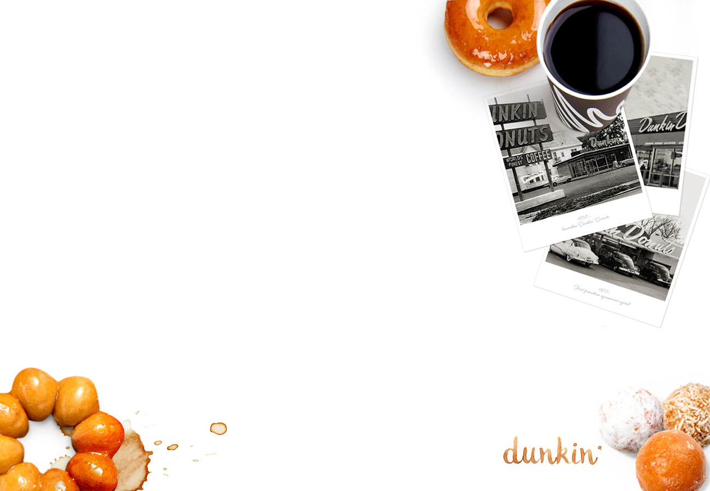

본문 콘텐츠영역
브랜드 스토리
“음식을 통해 사람들의 삶을 즐겁고 건강하게 만든다.”샐러디는 웜볼, 랩, 샌드 등 더욱 다양한 메뉴군과 함께 샐러드 전문점을 넘어 건강한 패스트푸드로 도약하고자 합니다. 앞으로 더 맛있고 건강한 메뉴들로 보다 많은 사람들에게 즐거움과 건강함을 선사하는 브랜드가 되겠습니다.
-

과거Past
2013년 겨울, 선릉역 뒷골목에 작은 식당이 한 가지 특별했던 점은 한 끼 식사로 샐러드를 판매했다는 것입니다. 그러나 샐러드를 '제대로 된 식사'로 여기는 사람들이 드물었기 때문에 식당의 앞날은 불투명하기만 했죠.
-

현재Present
매일같이 어려움 속에서 저희를 지탱해준 것은 기름진 식문화를 보다 신선하고 건강하게 바꾸겠다는 의지였습니다. 10명 남짓의 손님들이 찾아오던 작은 식당은 어느새 하루 1만명의 손님들을 맞이하는 브랜드가 되었죠.
메뉴
= vegan * = 기본 드레싱 또는 세부 안내 사항
웜볼Warm Bowl

칠리베이컨 CHILLI BACON
베이컨, 에그, 옥수수, 양파플레이크 *크리미칠리


샐러디Salady

리코타치즈 RICOTTA CHEESE
리코타치즈, 크랜베리, 견과류, 통밀빵 *발사믹

연어 SALMON
연어, 스윗포테이토, 양파 *레몬

쉬림프 SHRIMP
쉬림프, 에그, 옥수수, 올리브, 칙피 *레몬
샌드Sand

치킨토마토 CHICKEN TOMATO
치킨, 토마토, *시저, 크림치즈, 채소, 곡물빵

에그베이컨 EGG BACON
에그, 베이컨, *허니머스타드, 크림치즈, 채소, 곡물빵

샬롯연어 SHALLOT SALMON
연어, 양파, *샬롯랜치, 크림치즈, 채소, 곡물빵
랩Wrap

샬롯연어 SHALLOT SALMON
연어, 토마토, 양파, *샬롯랜치, 채소, 또띠아

칠리베이컨 CHILLI BACON
베이컨, 에그, 옥수수, 양파플레이크, *크리미칠리, 채소, 곡물, 또띠아

우삼겹 BEEF LOIN
우삼겹, 양파, 견과류, *오리엔탈, 채소, 곡물, 또띠아
Make YourOwn Salady
*기본 베이스인 '채소볼' 또는 '곡물볼'을 선택하여 기호에 맞게 커스터마이징(customizing) 해서 즐기세요!
메인 토핑Main Topping
*토핑 추가는 메인토핑과 서브토핑 포함 최대 5개까지 가능합니다.
서브 토핑Sub Topping
*토핑 추가는 메인토핑과 서브토핑 포함 최대 5개까지 가능합니다.
드레싱Dressing
*드레싱은 모두 샐러디만의 레시피로 만들어졌으며, 주문 시 변경이 가능합니다.
영양정보
샐러디는 영양학적인 고려하에 메뉴를 구성하며, 이러한 노력이 궁극적으로 고객분들의 건강에 도움이 될 것이라고 믿습니다.
-

균형Balance
샐러디는 3대 영양소인 탄수화물, 단백질, 지방의 적절한 분배와 균형을 추구합니다. 개개인의 식습관에 따라 탄수화물, 단백질, 지방간의 구성 비율이 다양한 샐러디의 메뉴들을 선택할 수 있습니다.
-

더하기Plus
일반적인 식습관을 가지고 있는 대부분의 사람들은 비타민, 무기질, 식이섬유 섭취가 부족합니다. 샐러디의 다양한 종류의 채소와 토핑들은 평소 섭취가 부족한 영양소들을 더하는데 도움을 줍니다.
-

빼기Minus
샐러디의 메뉴들은 다른 일반적인 음식 대비 당, 포화지방, 나트륨 함량이 적습니다. 샐러디는 기존 메뉴에서 빼야 할 영양소는 줄여가고, 맛과 품질을 유지하는 선에서 레시피 개선에 대한 연구를 지속하고 있습니다.
프랜차이즈
샐러디는 데이터를 기반으로 지속 가능한 프랜차이즈를 추구합니다

데이터가 보여주는 수익률 “25%”
샐러디는 매월 전체 가맹점의 ‘실제 이익률’을 데이터로 추적하고 있습니다. 2021년 기준 전체 매장 평균 이익률(재료비, 인건비, 임대료를 모두 반영한 실제 영업이익률)은 전체 매출 대비 25% 수준 입니다. 매출 상위권 매장이 아닌 전체 매장 평균 이익률입니다.

혼밥, 포장, 배달, 7평 부터
코로나 바이러스 발생 이후 샐러디의 전국 매장 평균 평당 매출은 20%이상 상승했습니다. (2020년 2월~12월 기준) 배달과 포장에 강점이 있는 샐러디의 영업 모델이 매출 상승을 견인했습니다. 7평부터 창업 가능한 소형 평수의 매장은 적합합니다.

모든 면에서, 압도적 1위
빠르게 성장하는 샐러드 전문점 시장에서 압도적 격차로 가장 높은 인지도와 최다 매장 수를 확보하고 있습니다. 샐러드 전문점을 넘어 ‘건강한 패스트푸드’로 외연을 확장하고 있는 지금도 뚜렷한 경쟁사가 없는, 독점적 지위를 유지하고 있습니다.

혼밥, 포장, 배달, 7평 부터
코로나 바이러스 발생 이후 샐러디의 전국 매장 평균 평당 매출은 20%이상 상승했습니다. (2020년 2월~12월 기준) 배달과 포장에 강점이 있는 샐러디의 영업 모델이 매출 상승을 견인했습니다. 7평부터 창업 가능한 소형 평수의 매장은 적합니다.